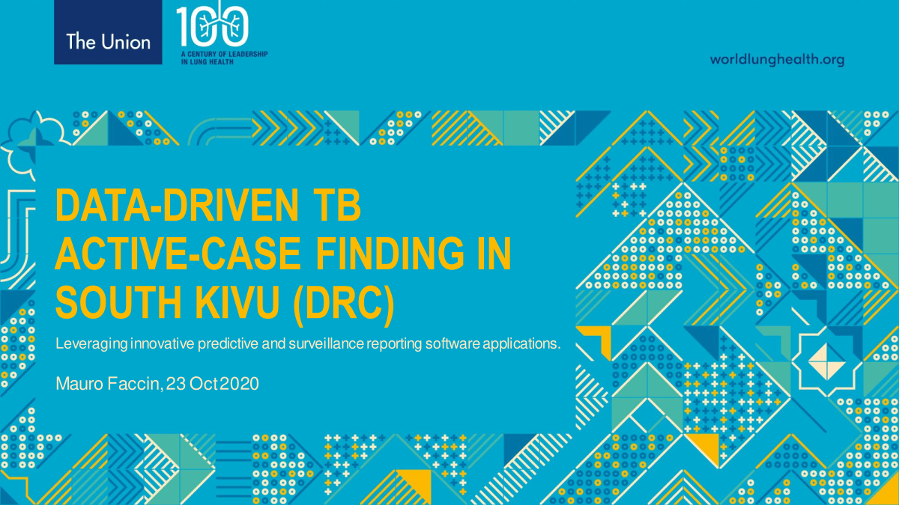

Mauro Faccin
MENU
Publications
Slides & Posters
Codes
Curriculum Vitæ
Contacts
Data-driven TB active-case finding in South Kivu (DRC)
The Union 2020 @ Paris (France --- Online)
Get the PDF from
HERE
